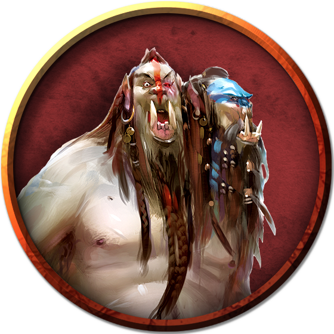

Ettin
An ettin is a foul, two-headed giant with the crude characteristics of an orc. It never bathes if it can help it, and its thick skin is usually encrusted with a thick layer of dirt and grime beneath the stinking hides it wears. Its long stringy hair hangs in an unkempt mess about its faces, and its breath reeks from mouths filled with crooked teeth and tusks.
Dual Personality. The twin heads of an ettin are two individuals trapped in the same brutish body. Each head has its own mind, personality, and name, and possesses unique preferences and quirks. Bound from birth, both minds only rarely experience privacy or solitude. This familiarity breeds contempt, and an ettin bullies and argues with itself constantly, its two heads each taking constant offense at the other's slights.
When other creatures refer to an ettin, they combine its double names to form a single compound name that applies to the creature as a whole. If an ettin has one head named Hargle and another named Vargle, other creatures call the ettin Harglevargle.
Solitary Lives. As much as an ettin argues with itself, it is even less tolerant of other ettins, since a conversation between two ettins almost always amounts to a shouting match between a crowd of four belligerent heads. Most ettins are solitary creatures as a result, tolerating one another only to reproduce.
An ettin's twin heads are always the same gender, with a body to match. Females are the dominant gender among ettins, and they initiate the ettins' mating rituals. After finding a suitable den, a female ettin hunts and conquers a male, which cares for and feeds her during her six-month pregnancy. Once the child is born, the male ettin is released from servitude. When the child is old enough to hunt for itself, the mother sends it away and abandons the den.
Two Heads Are Better Than One. When focused on a mutually beneficial purpose or united by a common threat, an ettin can resolve its personality differences and dedicate itself fully to a task. An ettin fights with a weapon in each hand, making twin attacks directed by its respective heads. When an ettin sleeps, one of its heads remains ever alert, gaining its only moments of privacy and keeping two eyes open for any creature that disturbs its precious solitude.
Orcish Ties. In ancient dialects of Common, the word "ettin" translates as "ugly giant." Legends tell of orcs that once stumbled upon a temple to Demogorgon, the magic of which transformed them into giant mockeries of the twin-headed Prince of Demons. These creatures scattered into the wilderness to become the first ettins.
Whatever the truth of the ettins' origin, orcs treat them as distant cousins, and orc tribes often entice ettins to serve as guards, scouts, and marauders. An ettin isn't particularly loyal to its orc handlers, but the orcs can win it over with the promise of food and loot.
As the Hordes have civilized, some effort has been made to bring the ettins into a more mundane existence. This has met with mixed and varied success, to the point where ettins can often be found in the retinue of Hordish merchants, mercenaries, and cities.
Environment
Forest, Mountain, Ruins, Urban
Token

Ettin
Large giant, chaotic evil
- Armor Class 12 (natural armor)
- Hit Points 85 (10d10 + 30)
- Speed 40 ft.
STR DEX CON INT WIS CHA 21 (+5) 8 (-1) 17 (+3) 6 (-2) 10 (+0) 8 (-1)
- Proficiency Bonus +2
- Saving Throws
- Damage Vulnerabilities
- Damage Resistances
- Damage Immunities
- Condition Immunities
- Skills Perception +4
- Senses darkvision 60 ft.,passive Perception 14
- Languages Giant,Orc
- Challenge 4
Two Heads. The ettin has advantage on Wisdom (Perception) checks and on saving throws against being blinded, charmed, deafened, frightened, stunned, and knocked unconscious.
Wakeful. When one of the ettin's heads is asleep, its other head is awake.
Actions
Multiattack. The ettin makes two attacks: one with its battleaxe and one with its morningstar.
Battleaxe. Melee Weapon Attack: +7 to hit, reach 5 ft., one target. Hit: 14 (2d8 + 5) slashing damage.
Morningstar. Melee Weapon Attack: +7 to hit, reach 5 ft., one target. Hit: 14 (2d8 + 5) piercing damage.